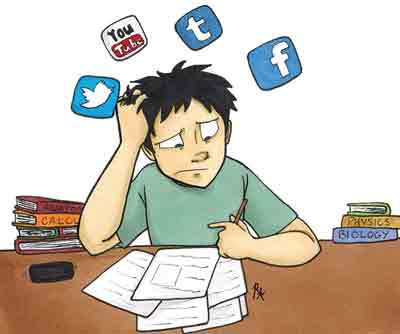

Depends on how you use it
I know some people might say if I put all my electronic devices away, there will have no distraction. That is true, but when you are trying to get rid of the distraction, you will spend extra energy. So, the distraction caused by technology is there; but how well you can manage it is mainly depends on yourself.